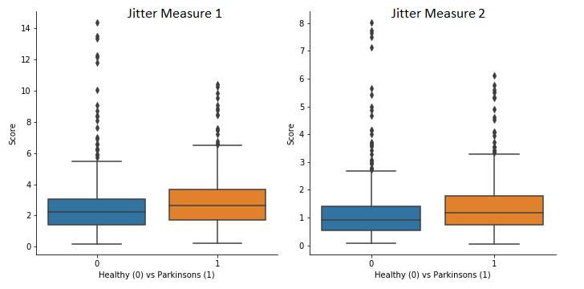
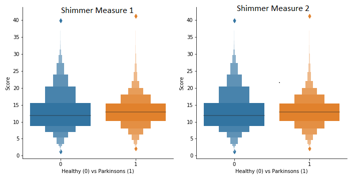
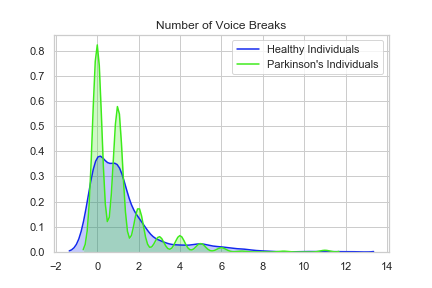

Parkinsons disease is a progressive and degenerative disease of the brain. The incidence increases with age and the later you are diagnosed - the less treatment options and lower quality of life. 7-10 Million people affected worldwide
Call Me - Parkinsons are a company dedicated to diagnosing Parkinsons disease at an early stage and improving patient outcomes. All you have to do is fill out the form below with a Name and Phone number. We use a range of variable to asses your Parkinsons Outcome Potential. This is based upon a Machine-Learning algorithm developed by our Cheif Scientific Officer - Harry Cooper.
Here are examples of the data we have collected so far - the more data we collect, the more accurate we get
Jitter and shimmer are the two common perturbation measures in acoustic analysis. Jitter is a measure of frequency instability, while shimmer is a measure of amplitude instability. A normal voice has a small amount of instability during sustained vowel production. We use 28 variables to measure a client's voice and accurately advise them. This in adds to our dataset and in turn trains the data.
Thank you for taking part. Please keep in mind our work is not to replace doctors or will not provide a confirmed diagnosis.